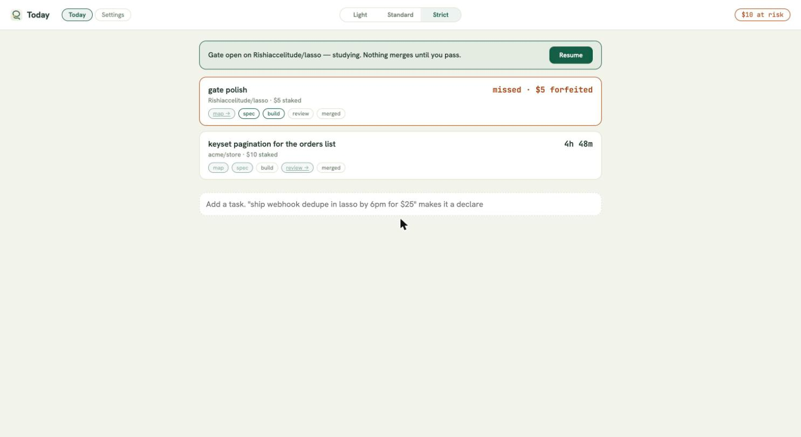
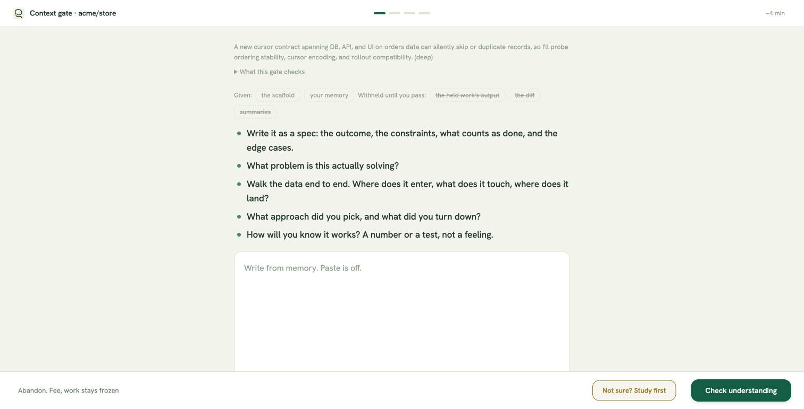
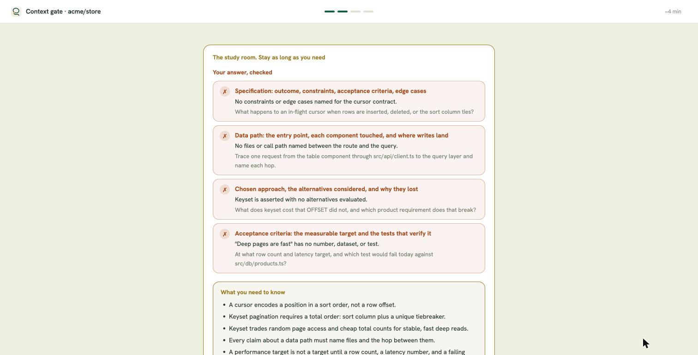
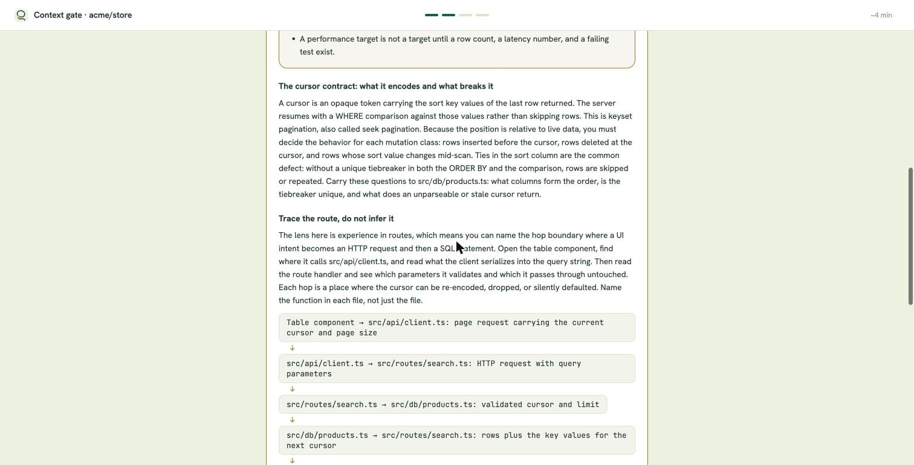
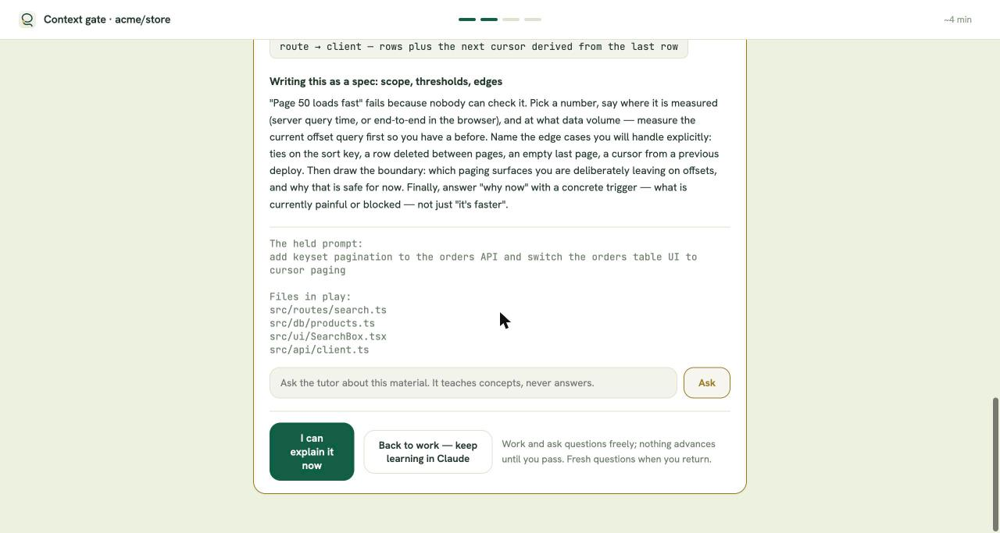
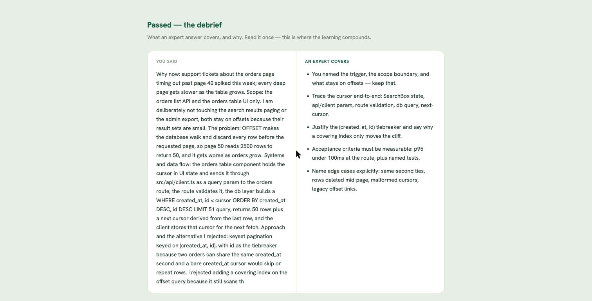
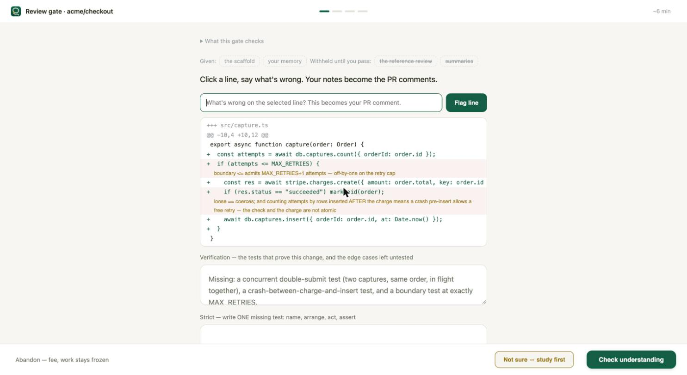
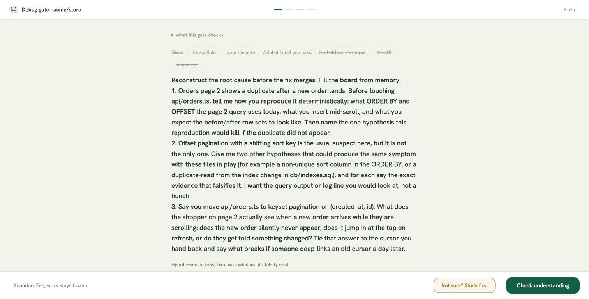
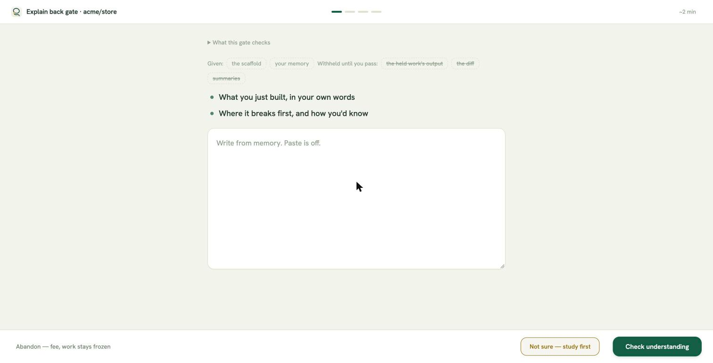
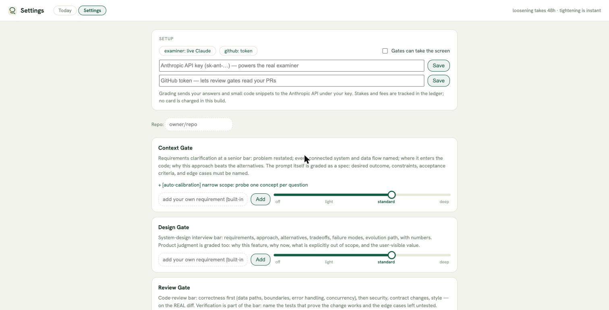

One loop, six gates. Each gate fires at a seam where work moves, verifies that you hold the understanding, and teaches exactly what you were missing. Claude and your tools are never taken away — the only closed-book moment is the attempt itself.
The universal loop
Every gate runs this exact cycle. It repeats until you pass — and the step it guards cannot move until you do.
1
Gate fires at a seam
Delegate, open a PR, hit a bug, finish a batch. Sized from your real work, with the rationale shown.
2
Blank attempt
Closed book. The scaffold and your memory — paste off, nothing else on screen.
3
Check understanding
Graded hard: an answer that would crumble under the obvious pushback is a gap, not a pass.
4
Study room, untimed
Your gaps + what you need to know + the lesson + a tutor. Stay as long as you want.
5
Back to work
Return to Claude: ask, read code, use every tool. A standing reminder says what's still locked.
6
Retry when ready
Resume from Today. Fresh questions, blank page. Loop until it's yours.
7
Pass
Debrief, then the seam opens: prompt released, check flips, chain advances.
4 → 5 → 6 cycles freely. 2 is the only closed-book moment, and 7 is the only way past the seam.
Always open — even mid-gate
Claude, in any terminal — prompts flow with a reminder once you've attempted
Reading code, running tests, using every tool
The study room and tutor, with no clock
Locked until you pass — in every terminal
The chain's next step (map → spec → build → review → merged)
git push (pre-push rail) and merge (required check)
The held work's output and the flow window
No side doors. The server is the single authority: a second terminal, a new session, or a reboot asks the same SQLite ledger and gets the same answer. First contact with an untried gate still holds (the closed-book moment must happen once); after that, prompts flow but every seam stays shut. Landing code without its gate is a breach — the skipped gate comes back deeper, before your next delegation.
The real screens, in order
Captured from the running app on 2026-11-13 — a real gate on a payment-capture task, driven end to end. This is exactly what you see.
1Today — your day at a glance
Declares with live countdowns and money at risk (a missed one shows its forfeit honestly) and a Resume row per open study break. Everything rides real work — there is no practice surface.

2The gate opens — a blank page and two doors
The ask is a bulleted checklist, sized from the actual work with the rationale in plain sight. A stale repo map adds one extra bullet — the architecture from memory — because the map is part of context, not a separate gate. Paste is off; two doors.

3Your answer, checked — green ✓, red ✗
Every scaffold point graded at a glance: green checks for what you covered, red ✗ with one short note and one pushback for what you didn't — pointers to go look, never the answer.

4The same page teaches — concise, on target
"What you need to know" is the irreducible 3–5 claims, then a lesson aimed only at what this work turns on: the concept's mechanism, the data model, the contract, the decision — with a flow picture where one helps.

5No timer — leave when YOU are ready
Stay as long as you need, ask the tutor (it teaches, never answers), or take the Back-to-work door: Claude and your tools stay fully open while the merge stays locked. "I can explain it now" starts a fresh blank attempt.

6Pass — and the debrief compounds it
Your full answer beside what an expert covers — short bullets, revealed only after the attempt is spent; the seam opens and the work is released.

7Review gate — the PR diff is the exam
Review the PR in YOUR tools — GitHub, Claude, your editor — and post real comments. The gate pulls them, grades them against a withheld reference, and shows ✓/✗ coverage plus what's untested. A miss comes back as a neighborhood hint, never the finding.

8Debug gate — evidence over guessing
Repo-specific questions and a hypothesis board: claims must be reachable from your evidence, rivals ruled out, and the fix plan must end in a regression test. Confident guessing fails even when right.

9Explain-back — own what you delegated
Two minutes after the agent finishes a batch: what was built, where it breaks first. The habit that keeps AI leverage compatible with real understanding.

10Settings
Per-gate difficulty bars, and the lens map drawing itself from your real work.

verified live → a real repo, a real PR, real merged code (lasso-dojo, 2026-11-12)
The whole coding flow, run for real
This is not a mock. The loop below was driven end to end as a user on a real GitHub repo the same day this page was published — every step through the actual product.
1
Prompt held
"add a sliding-window option to the limiter" — held in every terminal, same gate.
2
Blank attempt, failed honestly
A hand-wavy answer got four pointers: "open src/limiter.mjs and name the exported symbols" — never the answer.
3
Back to work
Built the sliding window with tests; one test's premise was wrong and got debugged for real.
4
Retry → pass
The earned answer — data model, tradeoff, checkable done — passed the hard bar.
5
PR → review gate
The poller minted a gate from the live PR. First review missed one: "a real high-severity issue hides within a few lines of line 9."
6
Went back, found it
Re-read the hunk: the hits map never evicts idle keys — unbounded memory under attacker-controlled keys.
7
Findings → real PR comments → merged
Three findings posted as an actual GitHub review; pre-push rail allowed; squash-merged.
What that proves: the understanding bar is enforced by the same seams your real work crosses — and the feedback made the reviewer find the bug, not read about it.
\n
fires when → you delegate (a prompt leaves for Claude)
1 · Context gate
Interview muscle: requirements clarification. Restate the problem, name the systems and data flows, defend the approach against the one you rejected, define done. This is the opening five minutes of every system-design and behavioral-technical round.
Context gate · optinet
Moving session state to Redis touches auth for every user and adds a dependency with its own expiry and failure semantics — this one goes deep. (deep)Go deeperThis is smaller
The problem, in your own words
The systems involved, and how data moves between them
Your approach, and why it beats the alternative you rejected
Done means…
Write from memory. Paste is off.
Abandon — fee, work stays frozenNot sure — study firstCheck understanding
THE ATTEMPT Blank page, two doors. The examiner sized the gate from your actual prompt and repo — the rationale is always visible, and one tap resizes it. The scaffold is the interview structure itself. Going straight to Check records confidence; Not sure records honesty and opens the study room with nothing spent.
Context gate · optinet
The study room — stay as long as you need
Where your answer fell short
"Sessions move to Redis" never says what a session row IS.What fields live in it, who writes it, and what reads it after login?The systems involved
You said reads continue if Redis is down — they can't; auth checks hit it on every request.What does a cache miss mean for a logged-in user mid-request?Your approach
WHAT YOU NEED TO KNOW
A session is data with a shape and an owner, not a vibe — name its fields and TTL.
Redis down means auth down unless you define a fallback; "it caches" is not a design.
The migration's real risk is the cutover: two stores briefly both believe they're the truth.
The data model under "session"
One row: user id, issued-at, expiry, device. The server owns writes; every authed request reads it. Move the row and you move the trust boundary with it.
browser cookie → server — session id only↓server → Redis — GET session:id on every request↓Redis → server — hit: proceed · miss: re-auth, never guess
Ask
I can explain it nowBack to work — keep learning in ClaudeNothing advances until you pass.
FEEDBACK + LEARNING, ONE PAGE Your gaps lead, then the exact knowledge that closes them. Gap cards quote your own sentences with one pushback each — always a question or a place to look, never the missing fact: you go back to the work and find it. The summary is the irreducible 3–5 claims. The lesson teaches only the axes this work turns on — concepts, data model, API contract, the decision — with a flow picture where one helps. No timer; the answer box is never on this screen, so there is nothing to copy into.
rishi@mac optinet % claude > walk me through how our auth middleware reads the session today Lasso: a gate is still open on this repo — learn and work freely; push/merge/next step stay locked until you pass it. Resume from Today. Sure — middleware/auth.ts pulls the cookie, then…
Gate open on optinet — studying. Nothing merges until you pass.Resume
BACK TO WORK The gate is not a jail. Ask Claude anything, in any terminal — the reminder travels with every prompt so no session ever "forgets." Today keeps one pine row pointing back into the gate. When you can say it in your own words, hit Resume → fresh questions, blank page.
Passed. Your prompt is released — the flow window opens and the chain's spec step turns green.
You said
"Session rows move to Redis with a 24h TTL; auth middleware reads by id; Redis down fails closed to re-auth…"
An expert covers
The cutover plan: dual-write window, then flip reads
What invalidates a session besides expiry (logout, password change)
The latency budget that justified Redis at all
PASS + DEBRIEF The learning compounds at the finish. Your answer sits beside what an expert covers — revealed only after the attempt is spent, so it can never be copied into one. Gaps you closed get resurfaced at 1d / 3d / 7d until two clean hits retire them.
fires when → the agent is about to build something new
3 · Design gate
Interview muscle: the system-design round itself. Requirements, approach, the alternative and why it lost, failure modes, evolution path — with numbers. Product judgment is graded too: why this feature, why now, what's out of scope.
Design gate · optinet
Why this feature, why now — and what's explicitly out of scope
Requirements, then the design that meets them
The alternative you rejected, and the tradeoff that decided it
How it fails, and how it evolves — with numbers
Write from memory. Paste is off.
Abandon — fee, work stays frozenNot sure — study firstCheck understanding
WHAT'S DIFFERENT The build is held, not your tools. The agent's build waits at this seam while you produce the design thinking first. Study-room lessons here lean hardest on the decision axis — tradeoffs, costs, numbers — because that's what separates a design answer from a feature list. The gate runs at full depth when the work is irreversible or novel; small reversible work earns a small gate.
fires when → a PR opens — the merge check stays pending until you pass
4 · Review gate
Interview muscle: reviewing another engineer's PR. Find the real issues in the real diff — boundaries, error handling, contracts — and name the missing tests. Your findings post as actual PR comments: the gate's output is real work.
Review gate · optinet · pr-214
@@ -1,3 +1,8 @@ src/consumer.ts
+ for (let i = 0; i <= batch.length; i++) {boundary <= overruns batch — last index reads undefined
+ if (batch[i].kind == 'retry') enqueue(batch[i]);
+ }
Verification — the tests that prove this change, and the edge cases left untested
consume() needs a boundary test at exactly N items, an empty batch, and a poison item…
Abandon — fee, work stays frozenNot sure — study firstCheck understanding
WHAT'S DIFFERENT The diff is the exam. You flag lines with inline notes; the examiner holds a withheld reference review of the same real diff and grades the match. A miss comes back as a neighborhood — “a real issue hides within a few lines of line 4” — never the finding itself; you re-read the hunk and catch it yourself. The reference reveals only at pass, as the debrief. Planted catch-trials measure your sensitivity. Reading the code, running it, asking Claude about unfamiliar APIs — all allowed. What's locked is the merge: the required check flips only on your pass, and pre-push holds in every terminal.
fires when → fix-shaped work arrives — a failing check, a bug prompt
5 · Debug gate
Interview muscle: the debugging round — evidence over guessing. Hypotheses that can be falsified, observations that rule things out, a root cause distinct from the symptom, a fix plan that ends in a regression test.
Debug gate · optinet
1. Webhook redelivery double-fires the consumer — falsified if delivery ids differ…
Same X-GitHub-Delivery id on both rows → rules out two real events
Abandon — fee, work stays frozenNot sure — study firstCheck understanding
WHAT'S DIFFERENT A hypothesis board, not an essay. Debugging tools stay live — run the code, add logs, bisect, ask Claude what a stack frame means. The gate verifies the method: a root cause your evidence doesn't reach fails even if the guess is right, evidence must rule the rival hypotheses out, and a fail tells you what to check next — a log to add, a path to trace — never the conclusion. You can't claim a root cause your evidence doesn't support, and the study room's lessons lean on the failure lens (what happens when a dependency is slow, wrong, or gone). Fix-shaped work jumps straight here — no ceremony first.
fires when → the agent finishes a batch of work in your session
6 · Explain-back gate
Interview muscle: owning delegated work. "Walk me through what you shipped" — if Claude wrote it and you can't explain it, you didn't ship it. Light depth, two minutes, superseded automatically if a PR (and its review gate) covers the same hunks.
Explain back · optinet
What was built, in your own words
The one decision in it you'd defend in review
Write from memory. Paste is off.
Abandon — fee, work stays frozenNot sure — study firstCheck understanding
WHAT'S DIFFERENT The smallest gate, the biggest habit. Seeded with the session's actual activity (files touched in the last hour). It's what makes "comfortable using AI tools" compatible with "actually understands the code" — every delegated batch ends with the work living in your head too.
Why this prepares you for the live version. Every surface is the interview's shape, run on your real work: the context scaffold is requirements clarification, the map outline is the new-codebase walkthrough, the design scaffold is the whiteboard round, flagged diffs are PR review, the hypothesis board is the debugging round, and unaided checks are the dress rehearsal — no help, no retry comfort, scored honestly. A month of loops is a month of reps in exactly the motions you'll perform live.